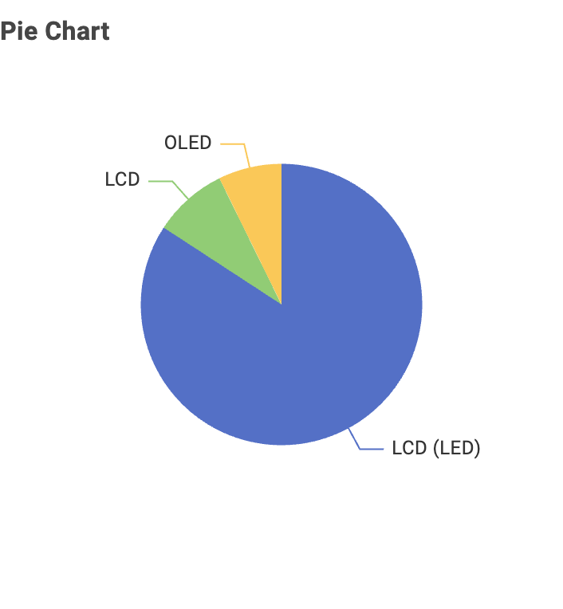

Television Energy Consumption in Australia
This page presents insights into the Australian television market using energy consumption data. The goal is to help consumers understand which TV types and sizes are most energy efficient.
1. TV Screen Technologies in Australia
The dataset shows that most TVs in Australia are LCD (LED), while OLED is less common.
2. Screen Sizes and Frequency
The most common screen sizes are 40–55 inches. Smaller TVs (<40 inch) are less popular, while very large TVs (>65 inch) are fewer but consume more power.
3. Brands with the Most Models
Samsung Electronics has the largest number of models in the dataset, reflecting their strong market presence in Australia.
4. Screen Technology and Power Consumption
LCD consumes least power.
5. Relationship Between Screen Size and Power Use
As expected, power consumption increases with screen size.
6. Star Rating and Screen Size
Star ratings are generally balanced across different screen sizes; larger TVs can still maintain high efficiency when designed effectively.
Conclusion
When buying a TV, brand, efficiency, power use, star rating are important aspects to consider.